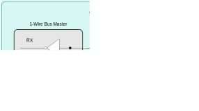

1-Wire Master (OWM)
The device provides a 1‑Wire master (OWM) that the software can use to communicate with one or more external 1‑Wire slave devices using a single-signal, combined clock, data protocol. The OWM is contained in the OWM module. The OWM module handles the lower-level details (including timing and drive modes) required by the 1‑Wire protocol, allowing the CPU to communicate over the 1‑Wire bus at a logical data level.
1-Wire Master Features
The OWM provides the following features:
-
Flexible 1‑Wire timing generation (required 1MHz timing base) using the OWM module clock frequency derived from the current system clock source
-
The OWM module clock can be pre-scaled to allow proper 1‑Wire timing generation using a range of base frequencies.
-
Automatic generation of proper 1‑Wire time slots for both standard and overdrive timing modes
-
Flexible configuration for 1‑Wire line pullup modes: options for internal pullup, external fixed pullup, and optional external strong pullup are available.
-
Long-line compensation and bit-banging (direct software drive) modes
-
1‑Wire reset generation and presence-pulse detection.
-
Generation of 1‑Wire read and write time slots for single-bit and eight-bit byte transmissions.
-
Search ROM Accelerator (SRA) mode simplifies the generation of multiple-bit time slots and discrepancy resolution required when completing the Search ROM function to determine the IDs of multiple, unknown 1‑Wire slaves on the bus.
-
Transmit data completion, received data available, presence pulse detection, and 1‑Wire line-error condition interrupts.
For more information about the 1‑Wire protocol and supporting devices, refer to the following resources:
iButton is a registered trademark of Maxim Integrated Products, Inc.
1-Wire Pins and Configuration
The one instance of the peripheral shown in Table 17‑1 lists the location of the OWM_IO and OWM_PE signals.
Table 17-1: MAX78000 1-Wire Master Peripheral Pins
| OWM Instance | Alternate Function Name |
|---|---|
| OWM | OWM_IO |
| OWM_PE |
1‑Wire I/O (OWM_IO)
The OWM_IO pin is a bidirectional I/O that is used to drive the external 1‑Wire bus directly. As described in the Book of iButton Standards, this I/O is generally driven as an open-drain output. The 1‑Wire bus requires a common pullup to return the 1‑Wire bus line to an idle high state when no master or slave device is actively driving the line low. This pullup can consist of a fixed resistor pullup (connected to the 1‑Wire bus outside the microcontroller), an internal pullup enabled by setting OWM_CFG.int_pullup_enable to 1, or an OWM module controlled external pullup enabled by setting OWM_CFG.ext_pullup_mode to 1.
Pullup Enable (OWM_PE)
The 1‑Wire pullup enable (PE) signal is an active high output used to enable an optional external pullup on the 1‑Wire bus. This pullup is intended to provide a stronger (lower impedance) pullup on the 1‑Wire bus under certain circumstances, such as during overdrive mode.
Clock Configuration
To correctly generate the timing required by the 1‑Wire protocol in Standard or Overdrive timing modes, the OWM clock must be set to achieve \(f_{owmclk} = 1MHz\). This clock generates both the Standard and Overdrive timing, so it does not need adjustment when transitioning from Standard to Overdrive mode or vice versa.
The OWM peripheral uses the system peripheral clock, PCLK, divided by the value in the OWM_CLK_DIV_1US.divisor field as shown in Equation 17‑1 where \(f_{PCLK}\ = \ \frac{f_{SYSCLK}}{2}\).
Equation 17-1: OWM 1MHz Clock Frequency
1-Wire Protocol
The general timing and communication protocols used by the OWM interface are those standardized for the 1‑Wire network.
Because the 1‑Wire interface is a master interface, it initiates and times all communication on the 1‑Wire bus. Except for the presence pulse generation when a device first connects to the 1‑Wire bus, 1‑Wire slave devices complete 1‑Wire bus communication only as directed by the 1‑Wire bus master. From a software perspective, the lowest-level timing and electrical details of how the 1‑Wire network operates are unimportant. The application can configure the OWM module properly and direct it to complete low-level operations such as reset, read, and write bit/byte operations. Thus, the OWM module on the microcontroller is designed to interface to the 1‑Wire bus at a low level.
Networking Layers
In the Book of iButton Standards, the 1‑Wire communication protocol is described in terms of the ISO-OSI model (International Organization of Standardization (ISO) Open System Interconnection (OSI) Network Layer model). Network layers that apply to this description are the Physical, Link, Network, and Transport layers. The Transport layer consists of the software that transfers memory data other than ROM ID contents to and from the individual 1‑Wire network nodes. The Presentation layer corresponds to higher-level application software functions (such as library layers) that implement communication protocols using the 1‑Wire layers as a foundation. This document describes the details of the physical, link, and network layers regarding the OSI Network Layer model. The Transport and Presentation layers are beyond the scope of this document.
Physical Layer
The 1‑Wire communication bus consists of a single data/power line plus ground. Devices (either master or slave) interface to the 1‑Wire communication bus using an open-drain (active low) connection, meaning the 1‑Wire bus normally idles in a high state.
An external pullup resistor is used to pull the 1‑Wire line high when no master or slave device is driving the line. This means that 1‑Wire devices do not actively drive the 1‑Wire line high. Instead, they either drive the line low or release it (set their output to high impedance) to allow the external resistor to pull the line high. This allows the 1‑Wire bus to operate in a wired-AND manner, as shown in Figure 17‑1, and avoids bus contention if more than one device attempts to drive the 1‑Wire bus at the same time.
Figure 17-1: 1-Wire Signal Interface

Link Layer
The 1‑Wire Bus supports a single master and one or more slave devices (multidrop). Slave devices can connect to and disconnect from the 1‑Wire Bus dynamically (as is typically the case with iButton devices that operate using an intermittent touch contact interface), which means that it is the master's responsibility to poll the bus as needed to determine the number and types of 1‑Wire devices that are connected to the bus.
The OWM initiates all communication sequences on the 1‑Wire Bus. The OWM determines when 1‑Wire data transmissions begin and the overall communication speed that is used. There are three different communication speeds supported by the 1‑Wire specification: standard speed, overdrive speed, and hyperdrive speed. However, only standard speed and overdrive speed are supported by the OWM peripheral in the devices.
OWM Reset and Presence Detect
The OWM begins each communication sequence by sending a reset pulse, as shown in Figure 17‑2. This pulse resets all 1‑Wire slave devices on the line to their initial states and causes them all to begin monitoring the line for a command from the OWM. Each 1‑Wire slave device on the line responds to the reset pulse by sending out a presence pulse. These pulses from multiple 1‑Wire slave devices are combined in wired-AND fashion, resulting in a pulse whose length is determined by the slowest 1‑Wire slave device on the bus.
Figure 17-2: 1-Wire Reset Pulse

In general, the 1‑Wire line must idle in a high state when communication is not taking place. The master can pause communication in between time slots. There is not an overall "timeout" period that causes a slave to revert to the reset state if the master takes too long between one time slot and the next time slot.
The 1‑Wire communication protocol relies on the fact that the maximum allowable length for a bit transfer (write 0/1 or read bit) time slot is less than the minimum length for a 1‑Wire reset. At any time, if the 1‑Wire line is held low (by the master or by any slave device) for more than the minimum reset pulse time, all slave devices on the line interpret this as a 1‑Wire reset pulse.
OWM Write Time Slot
All 1‑Wire bit time slots are initiated by the 1‑Wire bus master and begin with a single falling edge. There is no indication given by the beginning of a time slot if a read bit or write bit operation is intended, as the time slots all begin in the same manner. Rather, the 1‑Wire command protocol enforces agreement between the OWM and slave as to which time slots are used for bit writes and which time slots are used for bit reads.
When multiple bits of a value are transmitted (or read) in sequence, the least significant bit of the value is always sent or received first. The 1‑Wire bus is a half-duplex bus, so data is transmitted in only one direction (from master to slave or from slave to master) at any given time.
As shown in Figure 17‑3, the time slots for writing a 0 bit and writing a 1 bit begin identically, with the falling edge and a minimum-width low pulse sent by the master. To write a one bit, the master releases the line after the minimum low pulse, allowing it to be pulled high. To write a zero bit, the master continues to hold the line low until the end of the time slot.
Figure 17-3: 1-Wire Write Time Slot
From the slave's perspective, the initial falling edge of the time slot triggers the start of an internal timer, and when the proper amount of time has passed, the slave samples the 1‑Wire line that is driven by the master. This sampling point is in between the end of the minimum-width low pulse and the end of the time slot.
OWM Read Time Slot
As with all 1‑Wire transactions, the master initiates all bit read time slots. Like the bit write time slots, the bit read time slot begins with a falling edge. From the master's perspective, this time slot is transmitted identically to the "Write 1 Bit" time slot shown in Figure 17‑3. The master begins by transmitting a falling edge, holds the line low for a minimum-width period, and then releases the line.
The difference here is that instead of the slave sampling the line, the slave begins transmitting either a 0 (by holding the line low) or a 1 (by leaving the line to float high) after the initial falling edge. The master then samples the line to read the bit value that is transmitted by the slave device.
For example, Figure 17‑4 shows a sequence in which the slave device transmits data back to the 1‑Wire bus master upon request. The slave device does not need to do anything to transmit a 1 bit. It simply leaves the line alone (to float high) and waits for the next time slot. The slave device holds the line low until the end of the time slot to transmit a 0 bit.
Figure 17-4: 1-Wire Read Time Slot

Standard Speed and Overdrive Speed
By default, all 1‑Wire communications following reset begin at the lowest rate of speed (that is, standard speed). For 1‑Wire devices that support it, it is possible for the OWM to increase the rate of communication from standard speed to overdrive speed by sending the appropriate command.
The protocols and time slots operate identically for standard and overdrive speeds. The difference comes in the widths of the time slots and pulses. The OWM automatically adjusts the timings based on the setting of the OWM_CFG.overdrive field.
If a 1‑Wire slave device receives a standard speed reset pulse, it resets and reverts to standard speed communication. If the device is already communicating in overdrive mode, and it receives a reset pulse at the overdrive speed, it resets but remains in overdrive mode.
Network Layer
ROM Commands
Following the initial 1‑Wire reset pulse on the bus, all slave 1‑Wire devices are active, which means they are monitoring the bus for commands. Because the 1‑Wire bus can have multiple slave devices present on the bus at any time, the OWM must go through a process (defined by the 1‑Wire command protocol) to activate only the 1‑Wire slave device it intends to communicate with and deactivate all others. This is the purpose of the ROM commands (network layer) shown in Table 17‑2.
Table 17-2: 1-Wire ROM Commands
| ROM Command | Hex Value |
|---|---|
| Read ROM | 0x33 |
| Match ROM | 0x55 |
| Search ROM | 0xF0 |
| Skip ROM | 0xCC |
| Overdrive Skip ROM | 0x3C |
| Overdrive Match ROM | 0x69 |
| Resume Communication | 0xA5 |
The ROM command layer relies on the fact that all 1‑Wire slave devices are assigned a globally unique, 64-bit ROM ID. This ROM ID value is factory programmed to ensure that no two 1‑Wire slave devices have the same value.
ROM ID
Figure 17‑5 is a visual representation of the 1‑Wire ROM ID fields and shows the organization of the fields within the 64-bit ROM ID for a device.
Figure 17-5: 1-Wire ROM ID Fields

Table 17‑3 provides a detailed description of each of the ROM ID fields.
Table 17-3: 1-Wire Slave Device ROM ID Field
| Field | Bit Number | Description |
|---|---|---|
| Family code | 0-7 | This 8-bit value is used to identify the type of a 1‑Wire slave device. |
| Unique ID | 8-55 | This 48-bit value is factory-programmed to give each 1‑Wire slave device (within a given family code group) a globally unique identifier. |
| CRC | 56-63 | This is the 8-bit, 1‑Wire CRC as defined in the Book of iButton Standards. The CRC is generated using the polynomial (x8 + x5 + x4 + 1 ). |
Note: For certain operations that consist only of writing from the OWM to the slave, it is technically possible for the master to communicate with more than one slave at a time on the same 1‑Wire bus. For this to work, the exact same data must be transmitted to all slave devices, and any values read back from the slaves must either be identical as well or must be disregarded by the master device (because different slaves can attempt to transmit different values). The following descriptions assume, however, that the master is communicating with only one slave device at a time because this is the method normally used.
As explained above, the ROM ID contents play a key role in addressing and selecting devices on the 1‑Wire bus. All devices except one are in an idle/inactive state after the Match ROM command or the Search ROM command is executed. They return to the active state only after receiving a 1‑Wire reset pulse.
Devices with overdrive capability are distinguished from others by their family code and two additional ROM commands (Overdrive Skip ROM and Overdrive Match ROM). The first transmission of the ROM command itself takes place at the normal speed understood by all 1‑Wire devices. After a device with overdrive capability is addressed and set into overdrive mode (that is, after the appropriate ROM command is received), further communication to that device must occur at overdrive speed. Because all deselected devices remain in the idle state if no reset pulse of regular duration is detected, even multiple overdrive components can reside on the same 1‑Wire bus. A reset pulse of regular duration resets all 1‑Wire devices on the bus and simultaneously sets all overdrive-capable devices back to the default standard speed.
Read ROM Command
The Read ROM command allows the OWM to obtain the 8-byte ROM ID of any slave device connected to the 1‑Wire bus. Each slave device on the bus responds to this command by transmitting all eight bytes of its ROM ID value, starting with the least significant byte (Family Code) and ending with the most significant byte (CRC).
Because this command is addressed to all 1‑Wire devices on the bus, if more than one slave is present on the bus, there is a data collision as multiple slaves attempt to transmit their ROM IDs at once. This condition is detectable by the OWM because the CRC value does not match the ROM ID value received. In this case, the OWM should reset the 1‑Wire bus and select a single slave device on the bus to continue either by using the Match ROM command (if the ROM ID values are already known) or the Search ROM command (if the master has not yet identified some or all devices on the bus).
After the Read ROM command is complete, all slave devices on the 1‑Wire bus are selected or active, and communication proceeds to the Transport layer.
Skip ROM and Overdrive Skip ROM Commands
The Skip ROM command is used to activate all slave devices present on the 1‑Wire bus regardless of their ROM ID. Normally, this command is used when only a single 1‑Wire slave device is connected to the bus. After the Skip ROM command is complete, all slave devices on the 1‑Wire bus are selected or active, and communication proceeds to the Transport layer.
The Overdrive Skip ROM command operates in an identical manner except that running it also causes the receiving slave devices to shift communication speed from standard speed to overdrive speed. The Overdrive Skip ROM command byte itself (0x3C) is transmitted at standard speed. All subsequent communication is sent at overdrive speed.
Match ROM and Overdrive Match ROM Commands
The Match ROM command is used by the OWM to select one and only one slave 1‑Wire device when the ROM ID of the device is already determined. When transmitting this command, the master sends the command byte (that is, 0x55 for standard speed and 0x69 for overdrive speed) and then sends the entire 64-bit ROM ID for the device selected, least significant bit first.
During the transmission of the ROM ID by the master, all slave devices monitor the bus. As each bit is transmitted, each of the slave devices compares it against the corresponding bit of their ROM ID. If the bits match, the slave device continues to monitor the bus. If the bits do not match, the slave device transitions to the inactive state (waiting for a 1‑Wire reset) and stops monitoring the bus.
At the end of the transmission, at most one slave device is active, which is the slave device whose ROM ID matched the ROM ID that was transmitted. All other slave devices are inactive. Communication then proceeds to the Transport layer for the device that was selected.
The Overdrive Match ROM command operates in an identical manner except that it also causes the slave device selected by the command to shift communication speed from standard speed to overdrive speed. The Overdrive Match ROM command byte (0x69) and the 64-bit ROM ID bits are transmitted at standard speed. All subsequent communication is sent at overdrive speed.
Search ROM Command
The Search ROM command allows the OWM to determine the ROM ID values of all 1‑Wire slave devices connected to the bus using an iterative search process. Each execution of the Search ROM command reveals the ROM ID of one slave device on the bus.
The operation of the Search ROM command resembles a combination of the Read ROM and Match ROM commands. First, all slaves on the bus transmit the least significant bit (bit 0) of their ROM IDs. Next, all slaves on the bus transmit a complement of the same bit. By analyzing the two bits received, the master can determine if the bit 0 values were 0 for all slaves, 1 for all slaves, or a combination of the two. Next, the master selects which slaves remain activated for the next step in the Search ROM process by transmitting the bit 0 value for the slaves it selects. All slaves whose bit 0 matches the value transmitted by the master remain active, while slaves with a different bit 0 value go to the inactive state and do not participate in the remainder of the Search ROM command.
Next, the same process is followed for bit 1, then bit 2, and so on until the 63rd bit (most significant bit) of the ROM ID is transmitted. At this point, only one slave device remains active, and the master can either continue with communication at the Transport layer or issue a 1‑Wire reset pulse to go back for another pass at the Search ROM command.
The Book of iButton Standards goes into more detail about the process used by the master to obtain ROM IDs of all devices on the 1‑Wire bus using multiple executions of the Search ROM command. The algorithm resembles a binary tree search and is used regardless of how many devices are on the bus.
There is no overdrive equivalent version of the Search ROM command.
Search ROM Accelerator Operation
The OWM module provides a special accelerator mode for use with the Search ROM command to allow the Search ROM command to process more quickly. This mode is activated by setting OWM_CTRL_STAT.sra_mode to 1.
When this mode is active, ROM IDs being processed by the Search ROM command are broken into 4-bit nibbles where the current 64-bit ROM ID varies with each pass through the search algorithm. Each 4-bit processing step is initiated by writing the 4-bit value to OWM_DATA.tx_rx. This causes the generation of twelve 1‑Wire time slots by the OWM as each bit in the 4-bit value (starting with the LSB) results in a read of two bits (all active slaves transmitting bit N of their ROM IDs, then all active slaves transmitting the complement of bit N of their ROM ID), and then a write of a single bit by the OWM.
After the 4-bit processing stage is complete, the return value is loaded into OWM_DATA.tx_rx consists of 8 bits. The low nibble (bits 0 through 3) contains the four discrepancy flags: one for each ID bit processed. If the discrepancy bit is set to 1, it means that either two slaves with differing ID bits in that position both responded (the 2 bits read were both zero), or no slaves responded (the 2 bits read were both 1). If the discrepancy bit is set to 0, then the 2 bits read were complementary (either 0, 1 or 1, 0), meaning there was no bus conflict.
In this way, at each step in the Search ROM command, the master either follows the ID of the responding slaves or deselects some of the slaves on the bus in case of a conflict. By the time the end of the 64-bit ROM ID is reached (the sixteenth 4-bit group processing step), the combination of all bits from the high nibbles of the received data are equal to the ROM ID of one of the slaves remaining on the bus. Subsequent passes through the Search ROM algorithm are used to determine additional slave ROM ID values until all slaves are identified. Refer to the Book of iButton Standards for a detailed explanation of the search function and possible variants of the search algorithm applicable to specific circumstances.
Resume Communication Command
If more than one 1‑Wire slave device is on the bus, then the master must specify which one it wishes to communicate with each time a new 1‑Wire command (starting with a reset pulse) begins. Using the commands discussed previously, this would normally involve sending the Match ROM command each time, which means the master must explicitly specify the full 64-bit ROM ID of the part it communicates with for each command.
The Resume Communication command provides a shortcut for this process by allowing the master to repeatedly select the same device for multiple commands without having to transmit the full ROM ID each time.
When the OWM selects a single device (using the Match ROM or Search ROM commands), an internal flag called the RC (for Resume Communication) flag is set in the slave device. (Only one device on the bus has this flag set at any one time; the Skip ROM command selects multiple devices, but the RC flag is not set by the Skip ROM command.)
When the master resets the 1‑Wire bus, the RC flag remains set. At this point, it is possible for the master to send the Resume Communication command. This command does not have a ROM ID attached to it, but the device that has the RC flag set responds to this command by going to the active state while all other devices deactivate and drop off the 1‑Wire bus.
Issuing any other ROM command clears the RC flag on all devices. So, for example, if a Match ROM command is issued for device A, its RC flag is set. The Resume Communication command can then be used repeatedly to send commands to device A. If a Match ROM command is then sent with the ROM ID of device B, the RC flag on device A will clear to 0, and the RC flag on device B is set.
1-Wire Operation
Once the OWM peripheral is correctly configured, then using the OWM peripheral to communicate with the 1‑Wire network involves directing the OWM to generate the proper reset, read, and write operations to communicate with the 1‑Wire slave devices used in a specific application.
The OWM manages the following 1‑Wire protocol primitives directly in either Standard or Overdrive mode:
- 1‑Wire bus reset (including detection of presence pulse from responding slave devices).
- Write single bit (a single write time slot).
- Write 8-bit byte, least significant bit first (eight write time slots).
- Read single bit (a single write-1 time slot).
- Read 8-bit byte, least significant bit first (eight write-1 time slots).
- Search ROM Acceleration Mode allowing the generation of four groups of three time slots (read, read, and write) from a single 4-bit register write to support the Search ROM command.
Resetting the OWM
The first step in any 1‑Wire communication sequence is to reset the 1‑Wire bus. To direct the OWM module to complete a 1‑Wire reset, write OWM_CTRL_STAT.start_ow_reset to 1. This generates a reset pulse and checks for a replying presence pulse from any connected slave devices.
Once the reset time slot is complete, the OWM_CTRL_STAT.start_ow_reset field is automatically cleared to zero. Then, the interrupt flag OWM_INTFL.ow_reset_done is set to 1 by the hardware. This flag must be cleared by writing a 1 bit to the flag.
If a presence pulse is detected on the 1‑Wire bus during the reset sequence (that should normally be the case unless no 1‑Wire slave devices are present on the bus), the OWM_CTRL_STAT.presence_detect flag is also set to 1. This flag does not result in the generation of an interrupt.
1-Wire Data Reads
Reading a Single Bit Value from the 1‑Wire Bus
The procedure for reading a single bit is like the procedure for writing a single bit because the operation is completed by writing a 1 bit that the slave device either leaves unchanged (to transmit a 1 bit) or overrides by forcing the line low (to transmit a 0 bit).
To read a single bit value from the 1‑Wire Bus, complete the following steps:
-
Set OWM_CFG.single_bit_mode to 1. This setting causes the OWM to transmit/receive a single bit of data at a time instead of the default 8 bits.
-
Write OWM_DATA.tx_rx to 1. Only bit 0 of this field is used in this instance; the other bits in the field are ignored. Writing to the OWM_DATA register initiates the read of the bit on the 1‑Wire bus.
-
Once the single-bit transmission is complete, the hardware sets the interrupt flag OWM_INTFL.tx_data_empty to 1. This flag (that triggers an OWM module interrupt if OWM_INTEN.tx_data_empty is also set to 1) is cleared by writing a 1 to the flag.
-
As the hardware shifts the bit value out, it also samples the value returned from the slave device. Once this value is ready to read, the interrupt flag OWM_INTFL.rx_data_ready is set to 1. If OWM_INTEN.rx_data_ready is set to 1, an OWM module interrupt occurs.
-
Read OWM_DATA.tx_rx (only bit 0 is used) to determine the value returned by the slave device. Note that if no slave devices are present or the slaves are not communicating with the master, bit 0 remains set to 1.
Reading an 8-Bit Value from the 1‑Wire Bus
The procedure for reading an 8-bit byte is like the procedure for writing an 8-bit byte because the operation is completed by writing eight 1 bits that the slave device either leaves unchanged (to transmit 1 bits) or overrides by forcing the line low (to transmit 0 bits).
-
Set OWM_CFG.single_bit_mode to 0. This setting causes the OWM to transmit/receive in the default 8-bit mode.
-
Write OWM_DATA.tx_rx to 0x0FFh.
-
Once the 8-bit transmission completes, the hardware sets the interrupt flag OWM_INTFL.tx_data_empty to 1. This flag (that triggers an OWM module interrupt if OWM_INTEN.tx_data_empty is also set to 1) is cleared by writing a 1 to the flag.
-
As the hardware shifts the bit values out, it also samples the values returned from the slave device. Once the full 8-bit value is ready to be read, the interrupt flag OWM_INTFL.rx_data_ready is set to 1. If OWM_INTEN.rx_data_ready is set to 1, an OWM module interrupt occurs.
-
Read OWM_DATA.tx_rx to determine the 8-bit value returned by the slave device. Note that if no slave devices are present or the slave devices are not communicating with the master, the return value 0x0FF is the same as the transmitted value.
Registers
See Table 3-3 for the base address of this peripheral/module. See Table 1-1 for an explanation of the read and write access of each field. Unless specified otherwise, all fields are reset on a system reset, soft reset, POR, and the peripheral-specific resets.
Table 17-4: OWM Register Summary
| Offset | Register | Description |
|---|---|---|
| [0x0000] | OWM_CFG | OWM Configuration Register |
| [0x0004] | OWM_CLK_DIV_1US | OWM Clock Divisor Register |
| [0x0008] | OWM_CTRL_STAT | OWM Control/Status Register |
| [0x000C] | OWM_DATA | OWM Data Buffer Register |
| [0x0010] | OWM_INTFL | OWM Interrupt Flag Register |
| [0x0014] | OWM_INTEN | OWM Interrupt Enable Register |
Register Details
Table 17-5: OWM Configuration Register
| OWM Configuration Register | OWM_CFG | [0x0000] | ||
|---|---|---|---|---|
| Bits | Name | Access | Reset | Description |
| 31:8 | - | RO | 0 | Reserved |
| 7 | int_pullup_enable | R/W | 0 | Internal Pullup Enable Set this field to enable the internal pullup resistor.
0: Internal pullup disabled.
1: Internal pullup enabled. |
| 6 | overdrive | R/W | 0 | Overdrive Enable Set this field to 1 to enable overdrive mode for 1‑Wire communications. Clearing this field sets 1‑Wire communications to standard speed.
0: Overdrive mode disabled, standard speed mode.
1: Overdrive mode enabled. |
| 5 | single_bit_mode | R/W | 0 | Bit Mode Enable When set to 1, only a single bit at a time is transmitted and received (LSB of OWM_DATA) rather than the whole byte.
0: Byte mode enabled, single bit mode disabled.
1: Single bit mode enabled, byte mode disabled. |
| 4 | ext_pullup_enable | R/W | 0 | External Pullup Enable Enables external FET pullup when the 1‑Wire master is idle. FET is designed to pull the wire high regardless of its enable state (that is, high or low). Idle means the 1‑Wire master is idle, and there are no 1‑Wire accesses in progress.
0: External pullup pin is not driven to high.
1: External pullup pin is driven high when the 1‑Wire bus is idle, actively pulling the 1‑Wire IO high. |
| 3 | ext_pullup_mode | R/W | 0 | External Pullup Mode Provides an extra output to control an external pullup. For long wires, a pullup resistor strong enough to pull the wire high in a reasonable amount of time might need to be so strong that it would be difficult to drive the line low. In this case, implement an external FET to actively drive the wire high for a brief amount of time. Then, let the resistor keep the line high. |
| 2 | bit_bang_en | R/W | 0 | Bit-Bang Mode Enable Enable bit-bang control of the I/O pin. If this bit is set to 1, OWM_CTRL_STAT.bit_bang_oe controls the state of the I/O pin.
0: Bit-bang mode disabled.
1: Bit-bang mode enabled. |
| 1 | force_pres_det | R/W | 1 | Presence Detect Force Setting this bit to 1 drives the OWM_IO pin low during presence detection. Use this bit field to prevent a large number of 1‑Wire slaves on the bus from all responding at different times, which might cause ringing. When this bit is set to 1, the OWM_CTRL_STAT.presence_detect bit is always set as the result of a 1‑Wire reset even if no slave devices are present on the bus.
0: OWM_IO pin floats during presence detection portion of 1‑Wire reset.
1: OWM_IO pin is driven low during presence detection portion of 1‑Wire reset. |
| 0 | long_line_mode | R/W | 0 | Long Line Mode Enable Selects alternate timings for 1‑Wire communication. The recommended setting depends on the length of the wire. For lines less than 40 meters, 0 should be used. Setting this bit to 0 leaves the write one release, the data sampling, and the time-slot recovery times at approximately 5μs, 15μs, and 7μs, respectively. Setting this bit to 1 enables long line mode timings during standard mode communications. This mode moves the write one release, the data sampling, and the time-slot recovery times out to approximately 8μs, 22μs, and 14μs, respectively.
0: Standard operation for lines less than 40 meters.
1: Long Line mode enabled. |
Table 17-6: OWM Clock Divisor Register
| OWM Clock Divisor | OWM_CLK_DIV_1US | [0x0004] | ||
|---|---|---|---|---|
| Bits | Name | Access | Reset | Description |
| 31:8 | - | RO | 0 | Reserved |
| 7:0 | divisor | R/W | 0 | OWM Clock Divisor
Divisor for the OWM peripheral clock. The target is to achieve a 1MHz clock. See the Clock Configuration section for details. 0x00: OWM clock disabled. 0x01: fowmclk = fPCLK / 1 0x02: fowmclk = fPCLK / 2 … 0xFF: fowmclk = fPCLK / 255 |
Table 17-7: OWM Control Status Register
| OWM Control Status | OWM_CTRL_STAT | [0x0008] | ||
|---|---|---|---|---|
| Bits | Name | Access | Reset | Description |
| 31:6 | - | RO | 0 | Reserved |
| 5 | presence_detect | R | 0 | Presence Detect Flag Set to 1 when a presence pulse is detected from one or more slaves during the 1‑Wire reset sequence.
0: No presence detect pulse during previous 1‑Wire reset sequence.
1: Presence detect pulse on bus during previous 1‑Wire reset sequence.
|
| 4 | od_spec_mode | R | 0 | Overdrive Spec Mode Returns the version of the overdrive spec. |
| 3 | ow_input | R | - | OWM_IN State Returns the current logic level on the OWM_IO pin.
0: OWM_IO pin is low.
1: OWM_IO pin is high. |
| 2 | bit_bang_oe | R/W | 0 | OWM Bit-Bang Output When bit-bang mode is enabled (OWM_CFG.bit_bang_en = 1), this bit sets the state of the OWM_IO pin. Setting this bit to 1 drives the OWM_IO pin low. Setting this bit to 0 releases the line, allowing the OWM_IO pin to be pulled high by the pullup resistor or held low by a slave device.
0: OWM_IO pin floating.
1: Drive OWM_IO pin to low state. |
| 1 | sra_mode | R/W | 0 | Search ROM Accelerator Enable Enable Search ROM Accelerator mode. This mode is used to identify slaves and their addresses that are attached to the 1‑Wire bus.
0: Search ROM accelerator mode disabled.
1: Search ROM accelerator mode enabled. |
| 0 | start_ow_reset | R/W | 0 | Start 1‑Wire Reset Pulse Write 1 to start a 1‑Wire reset sequence. Automatically cleared by the OWM hardware when the reset sequence is complete.
0: 1‑Wire reset sequence complete or inactive.
1: Start a 1‑Wire reset sequence. |
Table 17-8: OWM Data Buffer Register
| OWM Data | OWM_DATA | [0x000C] | ||
|---|---|---|---|---|
| Bits | Name | Access | Reset | Description |
| 31:8 | - | RO | 0 | Reserved |
| 7:0 | tx_rx | R/W | 0 | OWM Data Field Writing to this field sets the transmit data and initiates a 1‑Wire data transmit cycle. Reading from this field returns the data received by the master during the last 1‑Wire data transmit cycle. |
Table 17-9: OWM Interrupt Flag Register
| OWM Interrupt Flag | OWM_INTFL | [0x0010] | ||
|---|---|---|---|---|
| Bits | Name | Access | Reset | Description |
| 31:5 | - | RO | 0 | Reserved |
| 4 | line_low | R/W1C | 0 | Line Low Flag If this flag is set, the OWM_IO pin was in a low state. Write 1 to clear this flag. |
| 3 | line_short | R/W1C | 0 | Line Short Flag The OWM hardware detected a short on the OWM_IO pin. Write 1 to clear this flag. |
| 2 | rx_data_ready | R/W1C | 0 | RX Data Ready Data received from the 1‑Wire bus and is available in the OWM_DATA.tx_rx field. Write 1 to clear this flag.
0: Receive data not available.
1: Data received and is available in the OWM_DATA.tx_rx field. |
| 1 | tx_data_empty | R/W1C | 0 | TX Empty The OWM hardware automatically sets this interrupt flag when the data transmit is complete. Write 1 to clear this flag. |
| 0 | ow_reset_done | R/W1C | 0 | Reset Complete This flag is set when a 1‑Wire reset sequence completes. To start a 1‑Wire reset sequence, see OWM_CTRL_STAT.start_ow_reset. Write 1 to clear this flag.
0: 1‑Wire reset sequence not complete or bus idle.
1: 1‑Wire reset sequence complete. |
Table 17-10: OWM Interrupt Enable Register
| OWM Interrupt Enable | OWM_INTEN | [0x0014] | ||
|---|---|---|---|---|
| Bits | Name | Access | Reset | Description |
| 31:5 | - | RO | 0 | Reserved |
| 4 | line_low | R/W | 0 | Line Low Interrupt Enable Set this field to 1 to enable the I/O pin low detected interrupt.
0: Interrupt disabled. 1: Interrupt enabled. |
| 3 | line_short | R/W | 0 | Line Short Interrupt Enable Set this field to 1 to enable the I/O pin short detected interrupt.
0: Interrupt disabled.
1: Interrupt enabled. |
| 2 | rx_data_ready | R/W | 0 | Receive Data Ready Interrupt Enable Set this field to 1 to enable the receive data ready interrupt.
0: Interrupt disabled.
1: Interrupt enabled. |
| 1 | tx_data_empty | R/W | 0 | Transmit Data Empty Interrupt Enable Set this field to 1 to enable the transmit data empty interrupt.
0: Interrupt disabled.
1: Interrupt enabled. |
| 0 | ow_reset_done | R/W | 0 | 1‑Wire Reset Sequence Complete Interrupt Enable Set this field to 1 to enable the 1‑Wire reset sequence completed interrupt.
0: Interrupt disabled.
1: Interrupt enabled. |